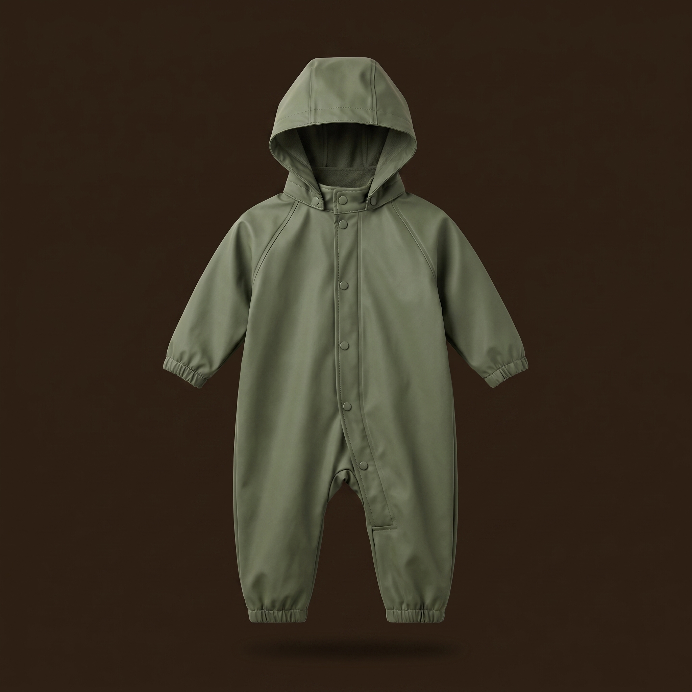
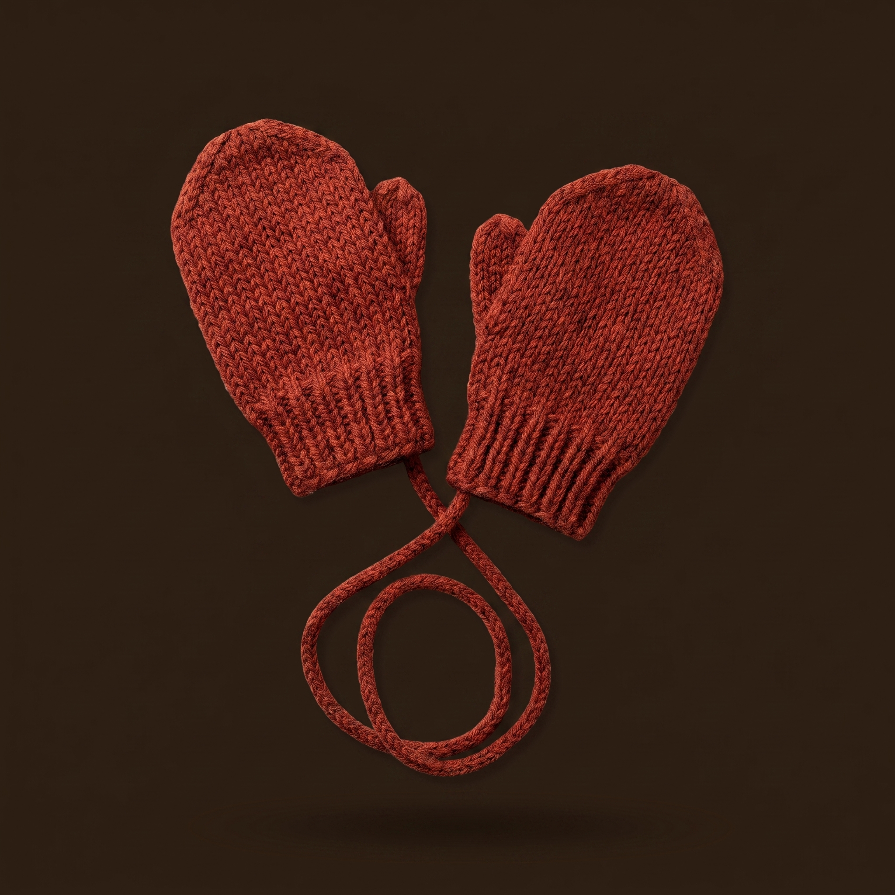
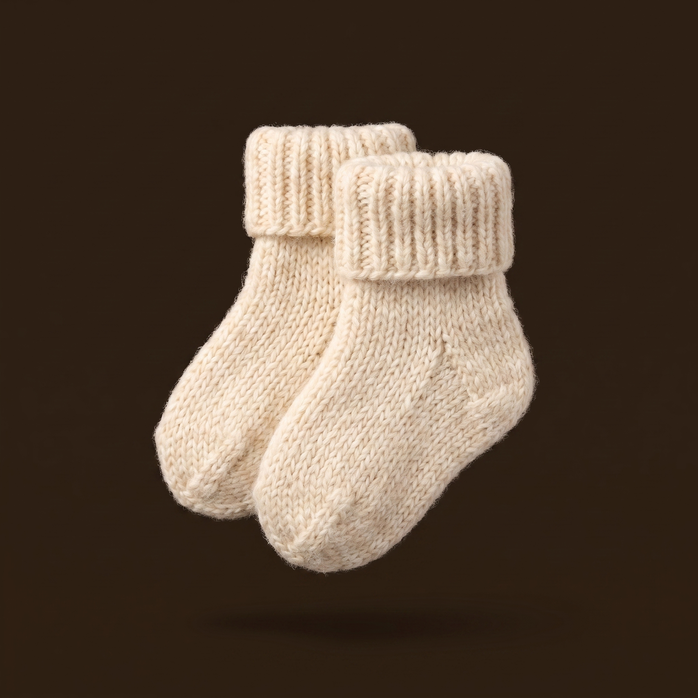

BABYORA
4°
Føles som 1° · Lett yr
Trondheim · Utenfor vogn
Juster
Dagens antrekk
7 plagg for Lillian, innerst til ytterst
1
Langermet ullbody
Innerst
Bytt
2
Ullgenser
Mellomlag
Bytt
3
Ullbukse
Mellomlag
Bytt
4

Regndress
Ytterst
Bytt
5
Lue med ull
Tilbehør
Bytt
6

Votter
Tilbehør
Bytt
7

Ullsokker
Tilbehør
Bytt
Kle på, steg for steg
Hvorfor akkurat dette?
Hjem
Planlegg
Familie